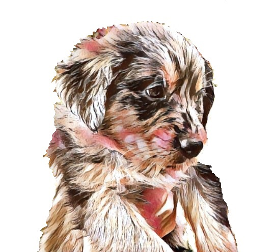
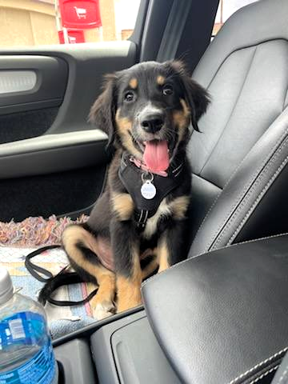

Hi! I'm a Goshen puppy, and I am so happy that you'll be taking me home to join your family soon!
I'm just a little baby and have a lot to learn, and I will thrive in an environment full of love and patience. I've never been on my own before, so I don't know what it's like to not be around my litter-mates. When you come to get me, I'll be all snugly and happy to be with you, but once we're together and on my way home, I might be a little shy and fearful. I'll be surrounded by sights and sounds I've never seen or heard before, and even smells to! Familiar smells help me feel calm and comfortable. Gentle petting and reassuring words with a reassuring tone will help me settle. I have been in a car before, but not very often, and it's possible I'll get car sick. I'm sorry if I have a little accident in your vehicle. I might feel a little overwhelmed at times too, and I might sing your ear off for a bit at the beginning, but that's just because so much is happening so suddenly, and I'm still just a little baby!
Because I'm just a little baby, I have just the tiniest little pee pouch, and I might need a break on occasion so I can go outside. I can learn quickly to hold it when I need to, but that will be much easier for me if you can help me learn the pattern in my new home by taking me out very regularly during my first couple months. This will help me learn that when I need to go, I won't have to wait long before my human comes and takes care of me, and I'll quickly be willing to wait longer. I don't like having messes where I sleep, and will do what I can to avoid having accidents in my bed, so if you notice that I am having little accidents, I might just need more frequent opportunities to find relief. I definitely don't want to make a mess, and I love having consistenent patterns and habits, if you'll be so kind and regular in your teaching them to me!
I don't think the way you think and I don't show what's on my mind the way you do. It would help me be successful if you could learn to read my face and body language so you can learn what I'm thinking and feeling. For example, sometimes I yawn when I'm tired, and sometimes I yawn when I'm uncomfortable or in a situation I don't like! There is also a chance that I might pull my lips back and smile at you with all my teeth! I'm a Goshen, and that smile means I'm submissive and recognize your position as pack leader, and I just want you to love me and be happy with me! The more of these kinds of things you can learn, the happier I will be, becuase knowing you will help me and respond to me well will help me build trust in you.